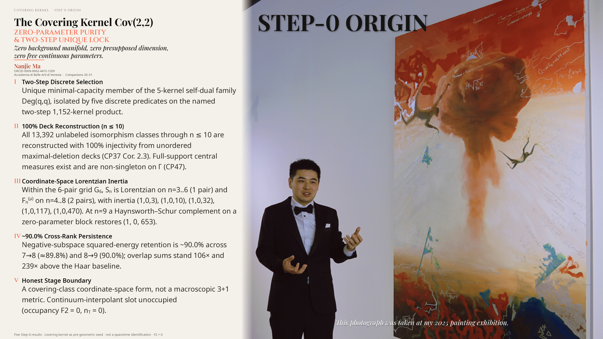
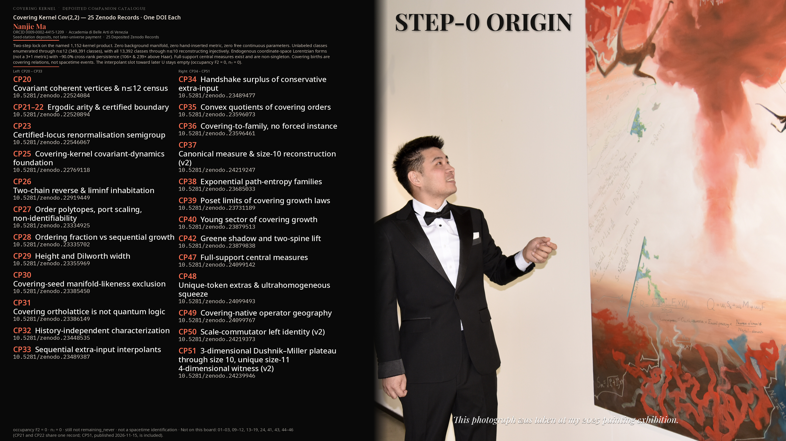
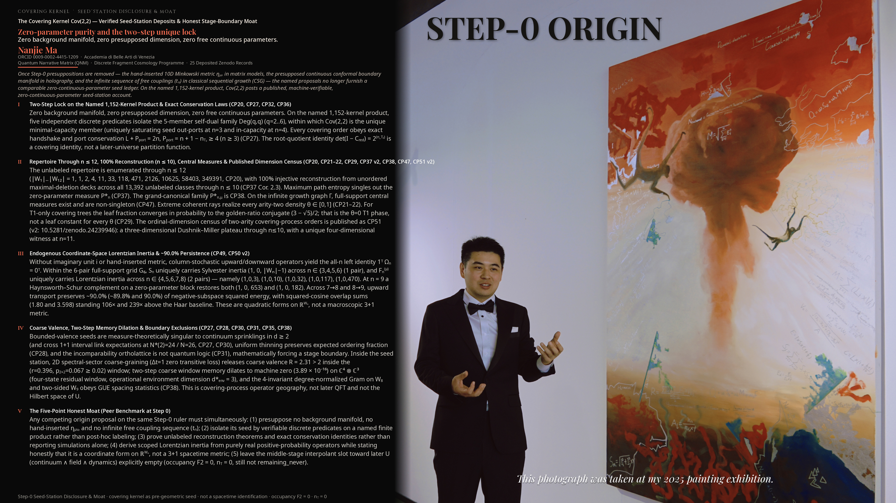

Programme note · 15 November 2026 · Nanjie Ma ·
ORCID 0009-0002-4415-1209 About / Work subpage. Three public overlay plates on 2025 exhibition photographs, with a seed-station speaking card. Not a homepage hero. Not a ranking. Not a breakthrough notice. Not cosmogenesis payment. The live 25-record deposit table remains on the covering-kernel page.
Before spacetime: one element, two ports, two births.
The covering kernel is a deposited seed-station family. It is not a later complete universe.
How to read this page.
The three plates below are illustrations on photographs from the author’s 2025 painting exhibition.
They are not theorems, not deposits, and not a spacetime identification.
Mathematics remains on the covering-kernel on-record page and in the Zenodo companions.
The catalogue plate is a poster of the 25-record covering-kernel list already on record; the live deposit table stays on the covering-kernel page.

Theorem board. Photograph from the 2025 painting exhibition.
Overlay: covering kernel Cov(2,2); unique minimal capacity kernel in a 1,152-candidate census; reconstructibility of covering histories through size 10; collisions at sizes 11 and 12; history-independent characterisation of the covering process; full-support central measures nonempty and not unique; Lorentzian bilinear type of S on ℝWn is not a spacetime metric; principal-angle persistence is a look, not a connection.
Not a proof, not a deposit, not cosmogenesis payment.

Catalogue plate. Photograph from the 2025 painting exhibition.
Overlay: the twenty-five covering-kernel records already on Zenodo — Companions 20–40, 42, 47, 48, 49, 50 and 51. Companion 41 is not listed. This is a poster, not the live table; the deposit table remains on the covering-kernel page.

Seed-station moat, on a 2025 exhibition photograph.
Overlay: what is deposited at the seed station, a scoped comparison with other first laws, and a written list of sentences this programme does not claim.
Same boundary: covering births are pre-geometric seed events; they are not identified with spacetime points.
What is in hand
The covering kernel is covariant covering growth with two generator kinds: a birth has either one parent, or exactly two incomparable parents.
Companion 25 is the foundation note of that family.
The object is a seed-station family F. It is not a later complete universe U.
Five independent discrete predicates select the self-dual family Deg(q, q) in a 1,152-candidate kernel space. Cov(2,2) is the unique minimal non-trivial capacity kernel that saturates out-capacity at cardinality 3 and in-capacity at cardinality 4 (Companion 36). Later stages need not copy that kernel space.
Covering histories remain reconstructible under maximal deletion through size 10. A stipulated history-independent path-entropy measure P*n is unique on each layer Wn. An unordered-deck census at sizes 11 and 12 is not injective (Companion 37, version 2). Uniqueness inside a named process is not uniqueness of cosmogenesis.
A nonempty set of full-support central measures exists; an extreme full-support central measure is not exhibited (Companion 47).
The covering scale commutator obeys the all-n left identity 1TΩn = 0T. The four-size Lorentzian plateau of S is a bilinear type on ℝWn, not a spacetime metric. Complementary negatives under T and the flux matrix F are distinct from S (Companion 50, version 2). Binary doubling remains a look, not a theorem.
Dushnik–Miller dimension is exactly 3 on every covering-process class of dimension at least 3 at sizes 8, 9 and 10; size 11 has a unique dimension-4 class, with an explicit four-realizer (Companion 51, version 3). Covering births are not spacetime events.
Same-polarity hinge complexes have dual diamond trees; a stipulated four-vertex form has vanishing covering Green (Companion 52). Occupying leftover interpolating sequential type by that hunt is too loose. Covering births are not spacetime events.
Zipper pyramids of a stipulated four-vertex form have a five-point interior stencil and a unique invertible six-diamond chord (Companion 53). Occupying leftover interpolating sequential type by that hunt is too loose. Covering births are not spacetime events.
Dual-family time and space diamonds of a stipulated four-vertex form have an exact seven-point interior stencil and an exact nine-point interior stencil (Companion 54). Occupying leftover interpolating sequential type by that hunt is too loose. Covering births are not spacetime events.
Zipper pyramids of a stipulated four-vertex form have closed self-energy formulae, a unimodular causal inverse, and conserved-self-energy strips (Companion 55). Occupying leftover interpolating sequential type by that hunt is too loose. Covering births are not spacetime events.
Covering polarity flux has a discrete Bianchi identity, a covering-edge volume law, and dual-family discrete stress-energy conservation on the Companion 54 stencil in spatial dimension 2 and 3 (Companion 56). That identity is not the contracted Bianchi identity of general relativity. Occupying leftover interpolating sequential type by that hunt is too loose. Covering births are not spacetime events.
The boundary, stated
Forbidden as payment or as a public slogan.
Not: we have derived 3+1 Lorentzian spacetime and quantum fields from the covering kernel, or solved quantum gravity.
Not: the ultra-early universe must be Cov(2,2), and that uniqueness already grows later spacetime.
Not: a scale commutator is a Minkowski light-cone, or Lorentz invariance is paid.
Not: binary doubling 2n−6 is a theorem for all n and all named laws.
Not: covering births are spacetime events, or a covering antichain is the CMB sky.
Not: hitting the covering kernel in order to reach CMB, H0, or 3+1. That is the wrong station.
Empty later seats are kept empty. Empty is not a ban. Open is not near.
Comparison, scoped
Causal-set sequential growth, IKKT/BFSS matrix models, and AdS/CFT typically start with objects this programme forbids at the seed station: a sequential birth law, a continuum or large-N matrix, or a dual gravitational bulk.
That is a cleaner source cut at the seed, not a better calculator of the sky, and not later-domain superiority.
First law
Seed-station reading here
Covering kernel Cov(2,2)
Deposited seed family. Two generator kinds. No extra sequential parameter at the seed. Not later U.
Causal-set sequential growth
A sequential birth law is extra at this seed. Presently the more likely true seed family on a separate seed-assessment page; that ranking is not payment.
IKKT / BFSS
Start from matrices. Forbidden as a seed here. Later-domain tools remain later-domain tools.
AdS/CFT
Starts with a dual pair. A covering antichain is not a holographic screen.
Objectivity test, kept.
Pretty small-N numbers that failed a larger pre-registered check stay failed.
A zero-parameter overlap-law intersection that looked like a double pass at N = 256 failed at N = 512 and 1024.
Natural-measure weighting of the scale commutator can keep a single-negative window through size 8 on named pairs and still split at size 9.
Those negatives stay on the record. They are not rewritten as payment.
Flagship deposits
The full covering-kernel table — Companions 20–40, 42, 47, 48, 49, 50 and 51, twenty-five covering-kernel records; Companions 52, 53, 54, 55 and 56 are Door-1 hunt notes, not a twenty-sixth covering-kernel flagship — is on the covering-kernel page. Companion 41 is not listed. Compact flagship links: